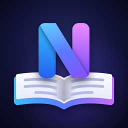

NexReader
Read Markdown the way it was meant to look. NexReader turns any .md file into a clean, comfortable page — headings, tables, code with syntax highlighting, task lists and quotes, rendered natively. Four reading themes, real folders, an outline, find in document, and Wi‑Fi Transfer from any computer. No account needed.
Support: kglay.kophyo@gmail.com
Found a bug, a document that renders wrongly, or have an idea? Please email. If a file looks wrong, attaching it (or a small part of it) makes it much quicker to fix.
Questions
How do I get files into NexReader?
Tap + and choose Import Files… to pick from the Files app, or open a .md file from another app with Share or “Open in”. On iPhone and iPad you can also use Receive over Wi‑Fi: open the address it shows in a browser on a computer on the same network, enter the code, and drop files onto the page. On a Mac, drag files onto the window.
Where are my documents stored?
On your device, in the app's own folder. On iPhone and iPad they also appear in the Files app, under On My iPhone (or iPad), in the same folders you see in the app, and a Markdown file you add there shows up in the library. On a Mac, choose “Reveal Library in Finder”.
Wi‑Fi Transfer says the page can't be reached.
Make sure the computer and your iPhone or iPad are on the same Wi‑Fi network, and keep the transfer screen open while sending. If you declined the Local Network permission, find NexReader in Settings › Apps and turn Local Network on. Some guest and office networks block devices from reaching each other; a home network or a personal hotspot usually works.
How do I change the theme or text size?
While reading, tap the Aa button for text size, theme and typeface. For everything else — weight, line height, spacing, width and alignment — open Reading Settings.
Which Markdown does it support?
GitHub-Flavored Markdown: headings, emphasis, lists and task lists, quotes, tables with alignment, fenced code with highlighting for 16 languages, images and links. Footnotes currently appear as plain text.
Does NexReader collect data?
Only anonymous usage statistics and crash reports — never your documents, their names, or what you search for — and you can switch that off in Reading Settings › Privacy. Details are in the privacy policy.